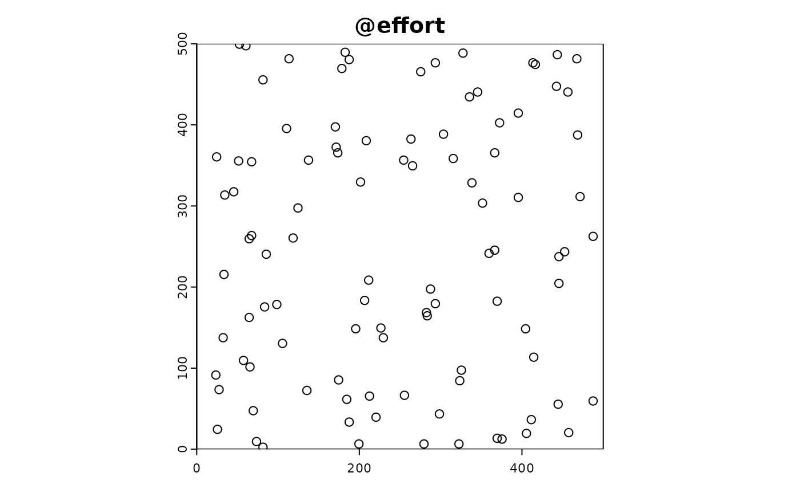
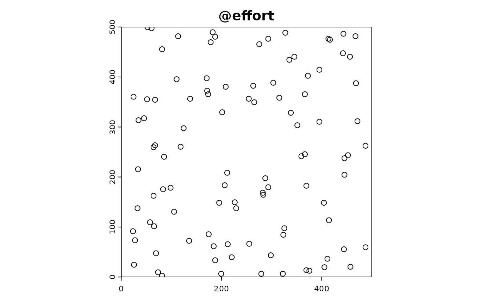

Use-case: Investigating the Impact of Sampling Co-location
use_case_colocation.RmdIntroduction
In ecological studies, monitoring multiple species across various taxa (e.g., butterflies, plants, birds) is essential for understanding biodiversity and ecosystem health. One strategy for monitoring these species is co-location, where data collection for different taxa occurs at the same sites. This approach can have various advantages, such as cost-effectiveness and comprehensive data collection, but it may also introduce biases or limitations.
This vignette demonstrates a workflow to simulate the effects of co-location on species monitoring data using the STRIDER package. We will generate species presence-absence data across a number of sites and then simulate different scenarios of co-located and non-co-located sampling. This includes:
- Generating Full Sampling Data: Creating a full dataset with species counts and environmental data across multiple sites.
- Simulating Co-location: Using a custom function to thin the dataset, representing different degrees of co-location for monitoring different taxa.
- Visualizing Co-location Effects: Plotting the distribution of species monitoring data to understand how co-location impacts data representation.
By running these simulations, we aim to investigate the benefits and challenges of co-location, such as whether certain taxa benefit from co-located monitoring and how sampling strategies might influence the accuracy and reliability of biodiversity assessments.
Setup
First, we load the required packages and set a seed for reproducibility.
library(STRIDER)
library(terra)
#> terra 1.7.78
library(sf)
#> Linking to GEOS 3.10.2, GDAL 3.4.1, PROJ 8.2.1; sf_use_s2() is TRUE
library(dplyr)
#>
#> Attaching package: 'dplyr'
#> The following objects are masked from 'package:terra':
#>
#> intersect, union
#> The following objects are masked from 'package:stats':
#>
#> filter, lag
#> The following objects are masked from 'package:base':
#>
#> intersect, setdiff, setequal, union
library(virtualspecies)
library(ggplot2)
set.seed(42)Custom Environmental State
We define custom environmental variables with different spatial patterns to simulate realistic scenarios.
dim_x <- 500
dim_y <- 500
#elevation
e_elev <- matrix(runif(dim_x * dim_y), dim_x, dim_y) |>
rast() |>
terra::aggregate(fact = 10) |>
terra::disagg(fact = 10) |>
focal(15,expand=T,fun = "mean") |>
focal(15,expand=T,fun = "mean") *1000
#slope and aspect
e_slope <- e_elev |> terrain()
e_slope[is.na(e_slope)] <- mean(values(e_slope),na.rm = T)
e_aspect <- e_elev |> terrain(v="aspect")
e_aspect[is.na(e_aspect)] <- mean(values(e_aspect),na.rm = T)
#latitudinal gradient, - elevation
e_temperature <- 60 + terra::rast(matrix(rep(seq(from = 1, to = dim_x), times = dim_y), dim_x, dim_y))/100 - (e_elev/100)*10
#latitudinal gradient, - elevation
e_rainfall <- 20 + t(terra::rast(matrix(rep(seq(from = 1, to = dim_x), times = dim_y), dim_x, dim_y)))/100 + (e_elev/100)*10
e_rainfall <- e_rainfall/max(values(e_rainfall))
custom_env <- c(e_elev,e_slope,e_aspect,e_temperature,e_rainfall)
# Define environmental variables with different spatial patterns
names(custom_env) <- c("elevation", "slope", "aspect", "temperature", "rainfall")Next, we integrate these custom environmental variables into the simulation object.
background <- terra::rast(matrix(0, dim_x, dim_y))
sim_obj <- SimulationObject(background = background)
sim_obj <- sim_state_env(sim_obj, spatraster = custom_env)Custom Suitability Functions for Multiple Species
We define custom suitability functions for multiple species, each
influenced differently by the environmental variables. We use the
virtualspecies package to do this.
# virtual species
suitability_virtual_species <- function(simulation_object,n_targets = 1,...){
outs <- list()
for (i in 1:n_targets){
out <- virtualspecies::generateSpFromPCA(simulation_object@state_env,sample.points = T, nb.point = 300,plot = F,...)
outs[[i]] <- out$suitab.raster
}
names(outs) <- paste0("target_",1:n_targets)
rast(outs)
}
sim_obj <- sim_state_target_suitability(sim_obj, fun = suitability_virtual_species,n_targets = 5)
#> - Perfoming the pca
#> - Defining the response of the species along PCA axes
#> - Calculating suitability values
#> The final environmental suitability was rescaled between 0 and 1.
#> To disable, set argument rescale = FALSE
#> - Perfoming the pca
#> - Defining the response of the species along PCA axes
#> - Calculating suitability values
#> The final environmental suitability was rescaled between 0 and 1.
#> To disable, set argument rescale = FALSE
#> - Perfoming the pca
#> - Defining the response of the species along PCA axes
#> - Calculating suitability values
#> The final environmental suitability was rescaled between 0 and 1.
#> To disable, set argument rescale = FALSE
#> - Perfoming the pca
#> - Defining the response of the species along PCA axes
#> - Calculating suitability values
#> The final environmental suitability was rescaled between 0 and 1.
#> To disable, set argument rescale = FALSE
#> - Perfoming the pca
#> - Defining the response of the species along PCA axes
#> - Calculating suitability values
#> The final environmental suitability was rescaled between 0 and 1.
#> To disable, set argument rescale = FALSERealised suitability
sim_obj <- sim_state_target_realise(sim_obj,fun=state_target_realise_binomial)Custom Effort Function
We create a custom effort function that simulates sampling effort.
custom_effort_function <- function(sim_obj, n_sites) {
sites <- sample(cells(sim_obj@background), n_sites, replace = TRUE)
coords <- xyFromCell(sim_obj@background, sites)
effort_df <- data.frame(
x = coords[, 1],
y = coords[, 2]
)
effort_sf <- st_as_sf(effort_df, coords = c("x", "y"))
return(effort_sf)
}
sim_obj <- sim_effort(sim_obj, fun = custom_effort_function, n_sites = 100)Custom Detection and Reporting Functions
We could define custom detection and reporting functions to introduce variability in the detection and reporting probabilities, but just use the default for now.
#detection
sim_obj <- sim_detect(sim_obj) 
Investigating co-location
This code demonstrates how to simulate co-location of species
monitoring data at various sites and visualize the distribution of
targets (species) across these sites. The goal is to investigate the
effects of co-locating monitoring efforts for different taxa versus
individual monitoring efforts. This is achieved through a function
colocation_thinning() that thins the data to simulate
varying degrees of co-location.
# Export the full sampling data from the simulation object
df <- sim_obj |> export_df()
# Get the full number of samples
nrow(df)
#> [1] 500
# Function to thin rows to simulate colocation
colocation_thinning <- function(sim_df, colocate_rate = 1, consistent_colocation = F, n_samples = 100) {
# Determine the number of unique targets (species) in the dataset
n_targets <- length(unique(sim_df$target))
# Calculate the number of targets per site based on the colocation rate
targets_per_site <- round(colocate_rate * n_targets)
print(paste0(targets_per_site, " targets per site"))
if (consistent_colocation) {
# If consistent colocation is required, sample a subset of targets to colocate
colocated_targets <- sample(unique(sim_df$target), targets_per_site)
# Filter the data for the colocated targets
sim_df_colocated <- df |> filter(target %in% colocated_targets)
# Randomly select a subset of sites to colocate the targets
sites_to_select <- unique(df$ID) |> sample(round(n_samples * colocate_rate) / targets_per_site)
sim_df_colocated <- sim_df_colocated |> filter(ID %in% sites_to_select)
# Sample the remaining targets to maintain the desired sample size
sim_df_noncolocated <- sim_df %>%
filter(!(target %in% colocated_targets)) %>%
sample_n(round(n_samples * (1 - colocate_rate)))
# Combine the colocated and non-colocated samples
sim_df <- bind_rows(sim_df_colocated, sim_df_noncolocated)
} else {
# Sample a subset of targets for each site if colocation is not consistent
sim_df <- df |> group_by(ID) |> sample_n(targets_per_site)
# Thin the sites to match the required number of samples
sites_to_select <- unique(df$ID) |> sample(round(n_samples / targets_per_site))
sim_df <- sim_df |> filter(ID %in% sites_to_select)
}
sim_df
}
plot_colocation <- function(thinned_df){
thinned_df |>
ggplot(aes(x = as.factor(ID), y = target, colour = target)) +
geom_point() +
theme_minimal() +
xlab("Site")
}Here are some different co-location scenarios
Despite different co-location, each scenario has consistent effort: 100 samples (the function default).
In this scenario, all targets are sampled at every site. This represents full co-location where each monitoring site collects data on all taxa.
colocation_thinning(df, colocate_rate = 1) |> plot_colocation()
#> [1] "5 targets per site"In this scenario, 60% of the targets are sampled at each site. The specific targets that are sampled can vary from site to site, leading to inconsistent co-location. Different sets of 3 out of 5 targets are sampled at each site.
colocation_thinning(df, colocate_rate = 0.6) |> plot_colocation()
#> [1] "3 targets per site"Here, only 20% of the targets are sampled at each site, which means each site samples only a single taxa with no overlap. This represents minimal co-location.
colocation_thinning(df, colocate_rate = 0.2) |> plot_colocation()
#> [1] "1 targets per site"
In this scenario, 60% of the targets are consistently sampled at the same sites. The same 3 out of 5 targets are always sampled at specific sites, while the remaining 2 targets are sampled randomly. This ensures some level of consistent co-location for certain taxa.
colocation_thinning(df, colocate_rate = 0.6,consistent_colocation = T) |> plot_colocation()
#> [1] "3 targets per site"Data analysis
The resulting data frame from each co-location scenario could be used to test various hypotheses around the advantages/disadvantages of sampling co-location.
colocation_thinning(df, colocate_rate = 0.6,consistent_colocation = T)
#> [1] "3 targets per site"
#> Simple feature collection with 100 features and 10 fields
#> Geometry type: POINT
#> Dimension: XY
#> Bounding box: xmin: 24.5 ymin: 2.5 xmax: 487.5 ymax: 486.5
#> CRS: NA
#> First 10 features:
#> ID elevation slope aspect temperature rainfall target
#> 1 2 521.9487 54.50794 18.755630 12.71513 0.9123834 target_2
#> 2 8 489.7239 66.14750 105.509877 14.65761 0.8669427 target_2
#> 3 10 508.6855 44.95129 358.269985 13.16145 0.9273158 target_2
#> 4 11 514.9139 45.86662 325.660503 10.21861 0.9195955 target_2
#> 5 16 488.9780 28.64112 186.524302 13.73220 0.9176742 target_2
#> 6 17 511.4303 36.25272 75.342785 12.21697 0.9254955 target_2
#> 7 19 483.3997 70.33664 217.331172 16.54003 0.9019392 target_2
#> 8 32 508.1422 40.16464 6.478815 13.59578 0.9469017 target_2
#> 9 35 505.7995 54.14221 304.888666 12.34005 0.9094447 target_2
#> 10 46 501.0879 24.30757 311.625993 11.24121 0.8987971 target_2
#> target_suitability target_realised target_detected geometry
#> 1 5.000153e-10 0 0 POINT (73.5 9.5)
#> 2 1.389060e-06 0 0 POINT (32.5 137.5)
#> 3 6.068872e-08 0 0 POINT (325.5 97.5)
#> 4 4.004671e-16 0 0 POINT (201.5 329.5)
#> 5 2.966115e-01 0 0 POINT (445.5 237.5)
#> 6 2.266461e-10 0 0 POINT (283.5 164.5)
#> 7 8.860315e-10 0 0 POINT (375.5 12.5)
#> 8 2.730581e-10 0 0 POINT (487.5 59.5)
#> 9 1.779646e-05 0 0 POINT (211.5 208.5)
#> 10 7.886272e-03 0 0 POINT (173.5 365.5)